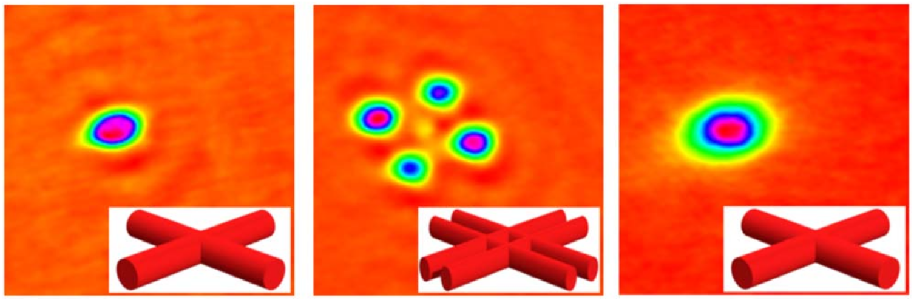
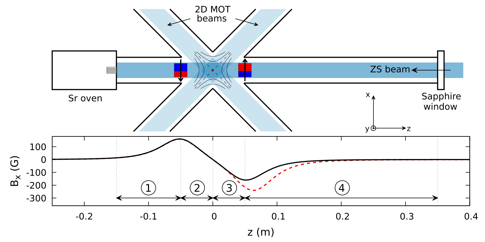
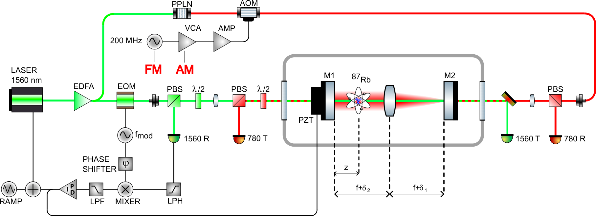
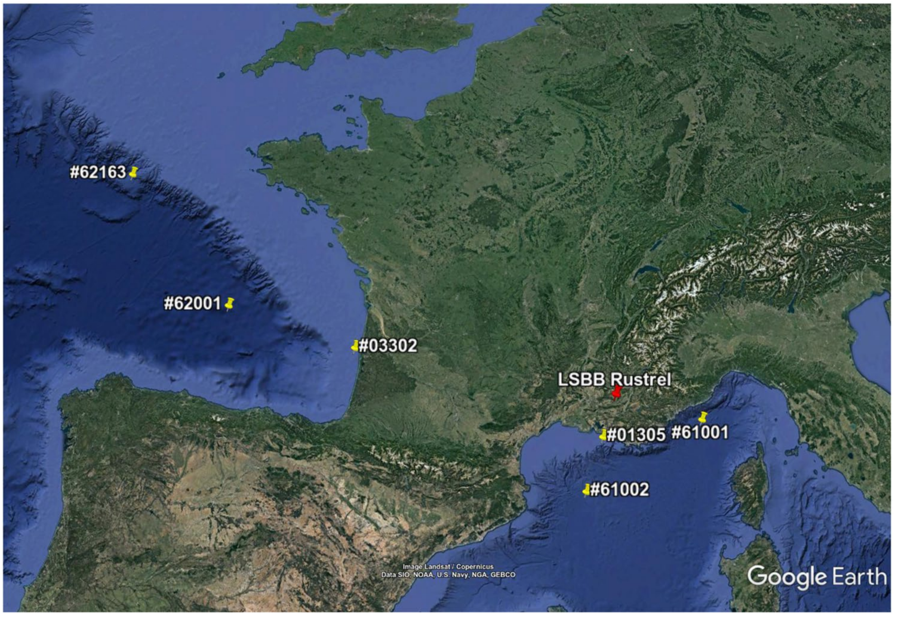
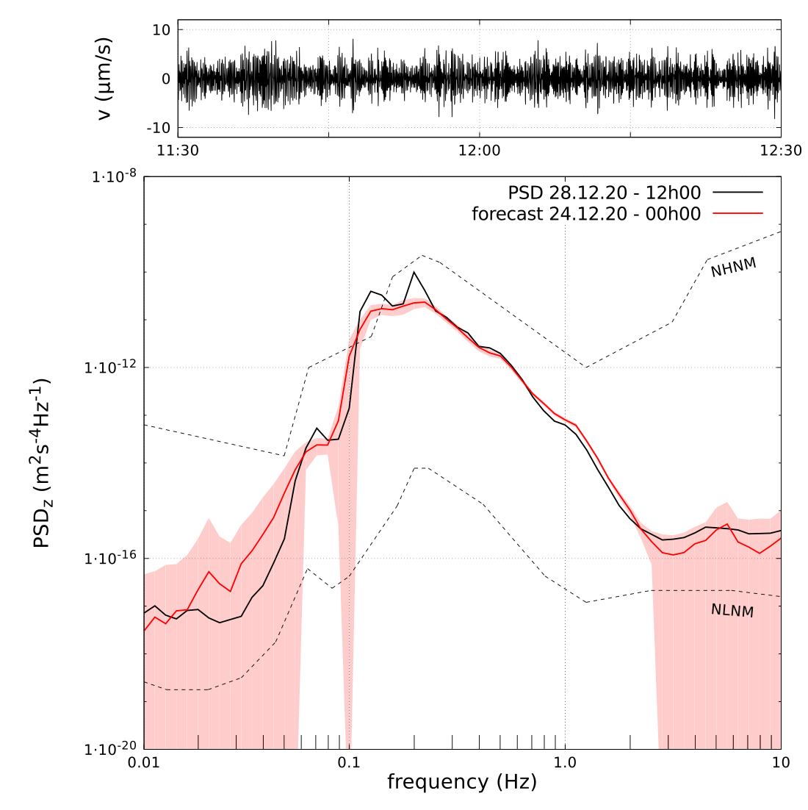

Research
Our research uses cold atoms and programmable physical systems to investigate precision measurement, collective dynamics and the emergence of effective physical behaviour. We combine experimental atomic physics with numerical modelling, optical engineering, electronics and real-time control.
Emergent light–matter physics in cavities and waveguides
We study collective phenomena produced by the interplay between cold atoms and propagating light. Two complementary platforms are central to this activity: traveling-wave optical cavities and hollow-core fibers. Both provide long-range atom–light coupling while allowing configurations that are qualitatively different from conventional standing-wave cavities.
In a traveling-wave cavity, circulating optical fields can mediate long-range interactions and generate dynamical instabilities, self-organization and nonequilibrium phase transitions. Because the atomic system need not be pinned by a standing-wave boundary condition, these geometries provide access to collective states associated with continuous symmetries and a continuous order parameter.


Hollow-core fibers offer a complementary one-dimensional environment in which atoms interact with guided optical modes over extended distances. We are exploring this platform for collective emission, waveguide-QED effects and the possible emergence of ordered atomic structures generated by light-mediated interactions rather than by an externally imposed lattice.
Continuous ultracold atoms: sources, superradiance and clocks
Many cold-atom instruments operate cyclically: atoms are prepared, interrogated and detected before the sequence starts again. We are developing continuous and quasi-continuous sources of alkaline-earth-like atoms to move beyond this pulsed operating mode and enable experiments with greatly reduced dead time.

Our source development focuses especially on strontium and ytterbium. We combine compact source geometries, efficient use of available optical power and successive cooling stages on broad and narrow optical transitions. A major goal is to produce high-flux cold beams suitable for continuously replenished experiments.
Two directions motivate this work. With strontium, we target continuously operated cavity experiments and ultimately CW superradiance. With ytterbium, we are developing an architecture for interleaved atomic-clock operation in which one ensemble can be interrogated while another is prepared.
Source design is supported by atomSmltr, our modular Python package for simulating laser-cooling setups. Earlier work includes a compact high-flux strontium source based on permanent-magnet slowing (Quantum Sci. Technol. 9, 025017 (2024)).

Atom interferometry, gravity and precision sensing
Atom interferometers use coherent matter waves as precision inertial sensors. Our work spans instrument development, atom optics, gravity and gravity-gradient measurements, and the extension of atom interferometry toward large-scale tests of fundamental physics.
A major part of this activity has been connected to MIGA, the Matter-wave laser Interferometric Gravitation Antenna, which combines atom interferometry with a large underground infrastructure. We have contributed to cold-atom sources, cavity-enhanced atom optics and the study of environmental gravity fluctuations relevant to future long-baseline instruments.




Synthetic universes and emergent physical laws
A complementary research direction asks a more general question: which microscopic dynamical rules give rise to stable structures, collective behaviour and effective macroscopic laws? We explore this question using programmable physical and digital systems whose interaction rules can be deliberately modified.
Cellular automata implemented on FPGAs provide fast, reproducible synthetic worlds in which large families of local update laws can be explored. Networks of coupled electronic oscillators offer a complementary physical platform in which coupling topology, asymmetry and collective dynamics can be directly engineered and measured.
The long-term goal is not simply to reproduce known models, but to search across families of possible laws and identify the conditions under which robust structures, phase transitions, information propagation and effective statistical descriptions emerge. This also provides a natural testbed for autonomous and AI-assisted scientific discovery.
Tools for experimental atomic physics
Several enabling technologies run across these research themes: numerical tools for atom dynamics and laser cooling, FPGA-based control electronics, optical cavities, magnetic-field engineering and automated experimental analysis. We develop these tools both to support our experiments and, when useful to the wider community, as reusable hardware or open software.Examples include atomSmltr for numerical modelling of laser-cooling systems and FPGA-based hardware developed for flexible real-time control of atomic physics experiments.